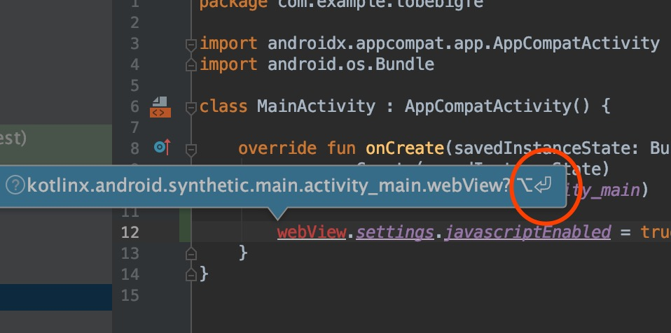

Activity
Activity 类是 Android 应用的关键组件，对于前端来说，可以简单认为一个Activity就是一个HTML tab页面，只不过它还包含Android特性的功能。
目前先了解以下几点：
- 生命周期：好比Vue/React的生命周期方法
- ContentView：视图根节点
Activity生命周期
大概了解一下

ContentView
要了解ContentView，先了解一下Android的布局XML文件，打开 app/res/layout/activity_main.xml:
- XML：使用XML描述UI结构，类似DOM使用HTML描述
- 预览开关：此处可打开和关闭预览
- 实时预览部分
Android通常让我们通过书写XML来构建基本的View结构，尽管还有其他方法，但是现在我们先了解XML。
DOM不是也有动态生成吗，Android也可以通过代码动态构建）
了解完后打开MainActivity.kt：
代码如下，请看注释：
1
2
3
4
5
6
7
8
9
10
11
12
13
14
15
16
17
18
19
20
21
22
23
24
| package com.example.tobebigfe
import androidx.appcompat.app.AppCompatActivity
import android.os.Bundle
class MainActivity : AppCompatActivity() {
override fun onCreate(savedInstanceState: Bundle?) {
super.onCreate(savedInstanceState)
setContentView(R.layout.activity_main)
}
}
|
Application
接下来了解一下Android App启动时发生了什么
AndroidManifest.xml
又一个XML文件，它描述了当前App的一些配置项。
一个粗略的启动步骤：
- 当一个App启动时会读取到
AndroidManifest.xml的配置
- 生产一个Application实例（如果没有配置则使用android.app.Application）
- Application启动后会先找到配置为启动的Activity（见下文的xml注释）
- 创建这个Activity，并调用onCreate方法
- Activity就会显示界面
AndroidManifest.xml配置说明：
1
2
3
4
5
6
7
8
9
10
11
12
13
14
15
16
17
18
19
20
21
22
23
24
25
26
| <?xml version="1.0" encoding="utf-8"?>
<manifest xmlns:android="http://schemas.android.com/apk/res/android"
xmlns:tools="http://schemas.android.com/tools"
package="com.example.tobebigfe">
<application
android:allowBackup="true"
android:icon="@mipmap/ic_launcher"
android:label="@string/app_name"
android:roundIcon="@mipmap/ic_launcher_round"
android:supportsRtl="true"
android:theme="@style/AppTheme"
tools:ignore="GoogleAppIndexingWarning">
<activity android:name=".MainActivity">
<intent-filter>
<action android:name="android.intent.action.MAIN" />
<category android:name="android.intent.category.LAUNCHER" />
</intent-filter>
</activity>
</application>
</manifest>
|
附带Google官方详细文档参阅（可以跳过）
本文没讲的Android细节知识，需要时间自己看文档和实践
WebView加载网页
打开app/res/layout/activity_main.xml，删除TextView, 添加一个WebView，如下：
1
2
3
4
5
6
7
8
9
10
11
12
13
14
15
16
17
18
19
20
21
22
23
24
| <?xml version="1.0" encoding="utf-8"?>
<androidx.constraintlayout.widget.ConstraintLayout
xmlns:android="http://schemas.android.com/apk/res/android"
xmlns:app="http://schemas.android.com/apk/res-auto"
xmlns:tools="http://schemas.android.com/tools"
android:layout_width="match_parent"
android:layout_height="match_parent"
tools:context=".MainActivity">
<WebView
android:id="@+id/webView"
android:layout_width="match_parent"
android:layout_height="match_parent"
app:layout_constraintBottom_toBottomOf="parent"
app:layout_constraintLeft_toLeftOf="parent"
app:layout_constraintRight_toRightOf="parent"
app:layout_constraintTop_toTopOf="parent" />
</androidx.constraintlayout.widget.ConstraintLayout>
|
在MainActivity中使用这个WebView
1
2
3
4
5
6
7
8
9
10
11
12
13
14
15
16
17
18
19
20
21
22
| ackage com.example.tobebigfe
import androidx.appcompat.app.AppCompatActivity
import android.os.Bundle
import android.webkit.WebViewClient
import kotlinx.android.synthetic.main.activity_main.*
class MainActivity : AppCompatActivity() {
override fun onCreate(savedInstanceState: Bundle?) {
super.onCreate(savedInstanceState)
setContentView(R.layout.activity_main)
webView.settings.javaScriptEnabled = true
webView.webViewClient = WebViewClient()
webView.loadUrl("https://baidu.com")
}
}
|
以上是最终代码，但这里讲解2个AndroidStudio提供的功能，以备后续高效编写代码
自动提示
AndroidStudio基于IDEA编辑器，代码提示非常非常充足和聪明，通常写kotlin会非常幸福
Shift+Enter引入
假如我们没有用到自动提示，比如复制代码进编辑器里，这时我们把光标移动到这行代码，编辑器依然会提示你要引入内容

及时没有提示，也可以Shift+Enter尝试引入，通常会正确引入所需
可以不用动光标，通过连续的Shift+Enter一步步引入尽可能多需要的
配置网络权限
在AndroidManifest.xml中添加网络权限，如下：
1
2
3
4
5
6
| <...
package="com.example.tobebigfe">
<uses-permission android:name="android.permission.INTERNET" />
<application ...
|
运行
打开Android手机调试模式
推荐使用百度搜索特定机型，比如：
- 华为手机打开usb调试模式
- 小米手机打开usb调试模式
完成后，插上USB线连接电脑和手机，连接好后，如下：
图中出现了我的设备，HUAWEI LIO-AN00，那么按图中的三角形运行
注意不是列表下面的Pixel 2 API 28, 这个是模拟器
如果这一步设备没有出现设备，需要百度解决一下
运行后的效果
到这就完成了WebView加载网页。